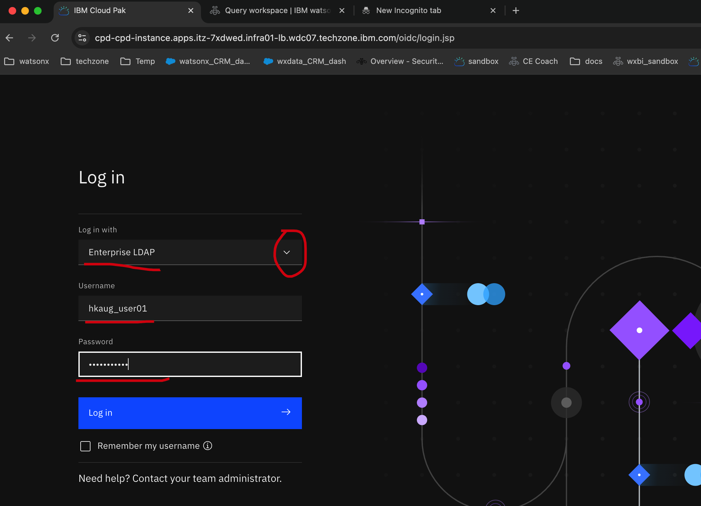
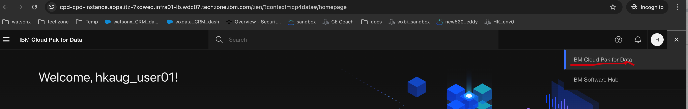
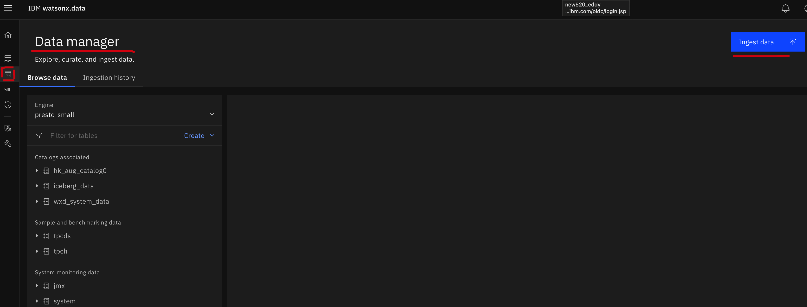
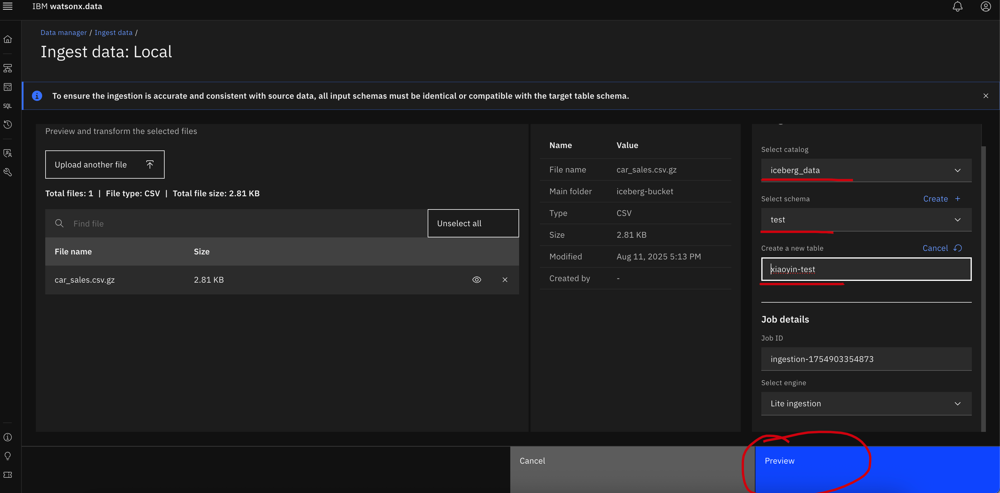
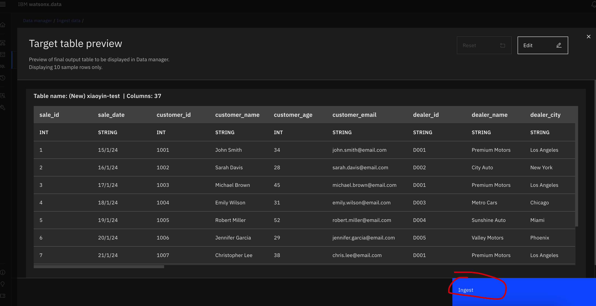
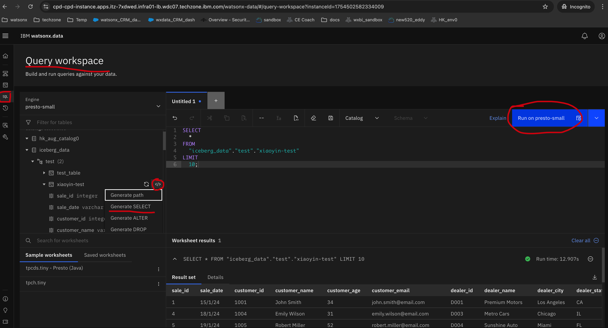
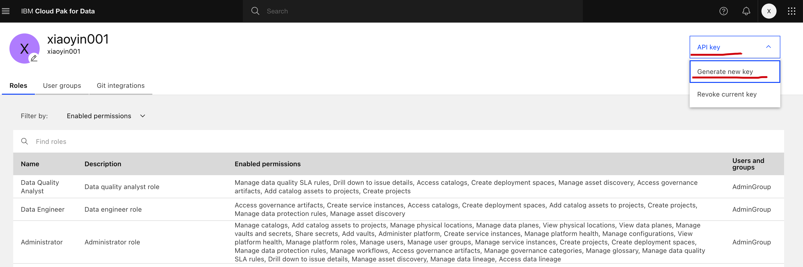
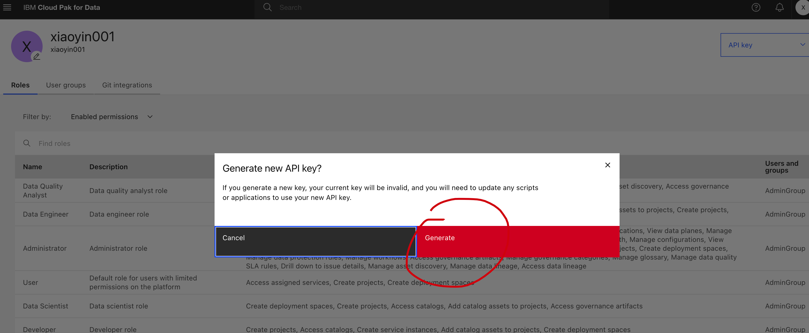

Then go to the upper left cornor and click the "Hamburger".

Open the URL: https://cpd-cpd-instance.apps.itz-7xdwed.infra01-lb.wdc07.techzone.ibm.com/ In the pull down list of the "Log in with" ==> Select "Enterprise LDAP"
In the Username, select the Username we assign to you in the csv
The Password is passw0rd123
If everthing is fine, you should see the login page as below

In the CP4D platform, go to the upper right cornor and click the "9 dots".

And select "IBM Cloud Pak for Data".

Then go to the upper left cornor and click the "Hamburger".
and click "Instances" under "Services".

In the new open "Service instances" page, hover your mouse to the lakehouse and open it.
Then you can see another page had been opened. Go to the left side bar, click the "Infrastructure Manager" and you could have a glance of the watsonx.data

Go to the left side bar, click the "Data Manager" and then click the "Ingest Data" on the right upper corner 
Select "Local System"

In the right upper cornor, select "Iceberg_data", and drag the csv into the box

Click "Next"

Select "iceberg_data" as catalog, "test" as schema==>Create a new table with name [your_test_table_name, like xiaoyin]-test==> click "Preview"

You will see the data sample, click "Ingest"

You will see an "Finished" Ingestion Job

Go to life side bar==>Click "Query workspace"==>Go to iceberg_data->test->table you created==>click "</>"==> "Generate Select" ==> "Run on presto-small", you will see the sample data

In the CP4D platform, go to the upper right cornor and click the user icon and then click "Profile and settings".

Then "API key" ==> "Generate new key".

Click "Gnerate".

Copy and store your API key somewhere, you will need it later!